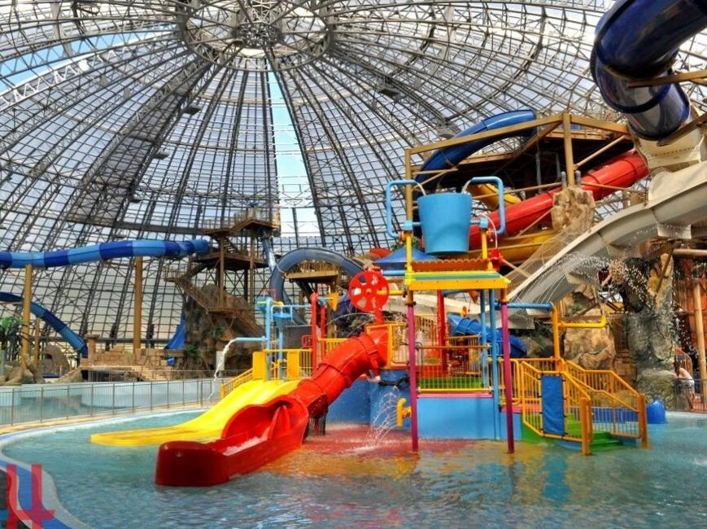
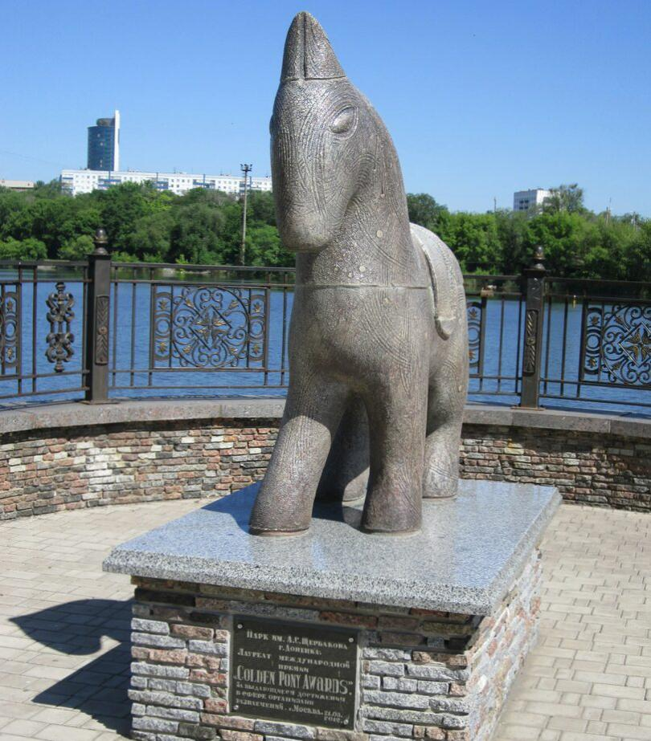
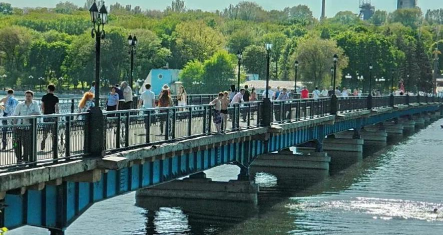

Центральный парк культуры и отдыха имени А. С. Щербакова
Официальной датой появления парка культуры и отдыха считается 1931 год. В ту пору его именовали «Центральным парком города Сталино». Основные работы по благоустройству парка начались в 1932 году. 60-е и 70-е годы ознаменовались масштабной реконструкцией: сажались различные виды роз, высадились тысячи разнообразных растений, начали строительство новых каруселей и аттракционов. Также на территории парка располагается аквапарк «Аквасфера». Которая тоже стала популярным развлечением у посетителей всех возрастов.
В марте 2012 года Донецкий парк культуры и отдыха имени А. С. Щербакова получил международную награду «Золотой пони», которая вручается самым выдающимся паркам развлечений. Церемония награждения состоялась в Москве. По инициативе местных властей и руководства парка было решено создать и установить скульптуру «Золотой пони» на территории парка. Эта маленькая лошадка стала настоящей любимицей посетителей, особенно детей. Новые фонтаны, аллеи и аттракционы совершенно преобразили парк Щербакова. И даже привычные всем места получают новый смысл.
Например, старый мост через Первый городской пруд стал мостом влюбленных с замочками «на вечную любовь», закрепленными по всей его длине. Люди вешают их для того, чтобы любовь была такой же прочной, крепкой и неразрывной как этот замок.
